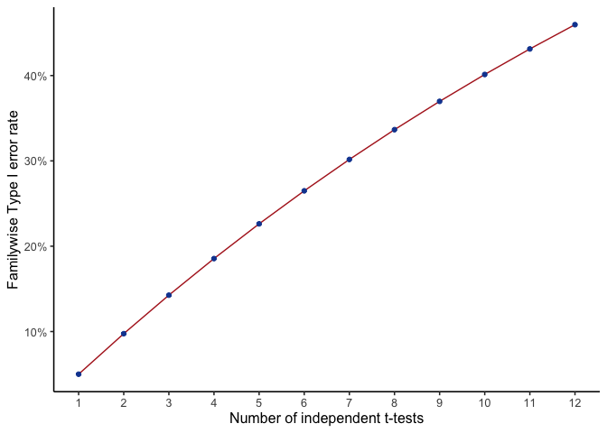
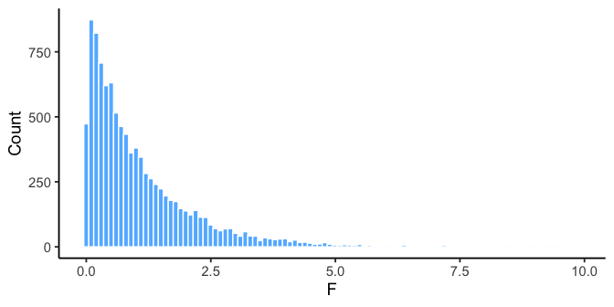
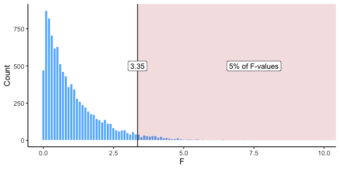
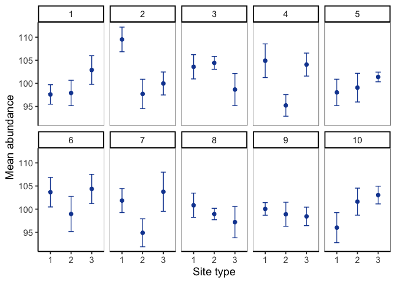
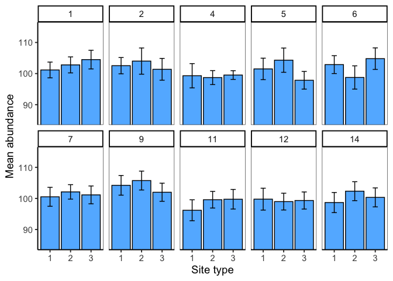
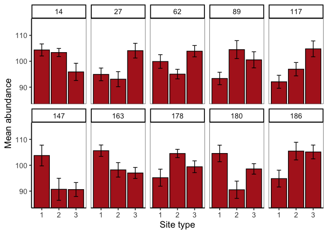
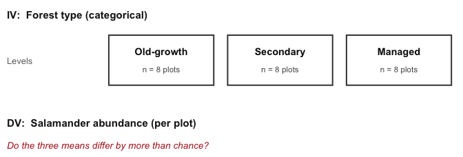
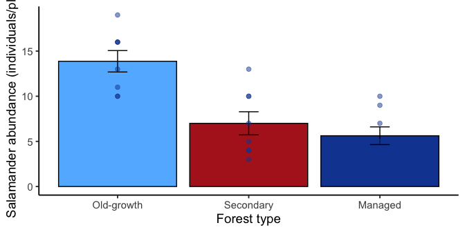
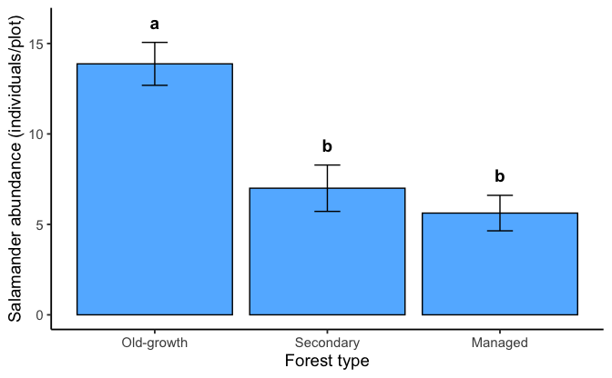

8 ANOVA
Some history first (Salsburg 2001). Sir Ronald Fisher invented the ANOVA and wanted to publish it in the journal Biometrika. The editor at the time was Karl Pearson, of Pearson’s \(r\), and the two men disliked each other, so Pearson refused to publish the new test. Fisher published it in the Journal of Agricultural Science instead. The feud carried into the next generation: years later, Karl Pearson’s son Egon Pearson, working with Jerzy Neyman, revamped Fisher’s ideas and re-cast them into what we now call null vs. alternative hypothesis testing. Fisher objected to that too.
We present the ANOVA in the Fisherian sense, and at the end describe the Neyman-Pearson approach that invokes the concept of null vs. alternative hypotheses.
8.1 ANOVA is Analysis of Variance
ANOVA stands for Analysis Of Variance. It tests whether differences among several group means are larger than we’d expect from chance alone.
With two groups, a \(t\)-test already answers that question. ANOVA extends the same logic to three or more groups, which comes up constantly in environmental science: multiple sites, multiple treatments, multiple time periods.
8.1.1 Why not just run multiple t-tests?
Suppose we’re comparing three restoration treatments for vegetation cover: compost, mulch, and a bare-soil control. With three groups, there are three possible pairwise comparisons: compost vs. mulch, compost vs. control, and mulch vs. control.
We could run a separate \(t\)-test for each. The problem is that every test carries its own 5% chance of a false positive, and those chances accumulate across tests. This is the independence multiplication rule from Chapter 3 doing its work: if we run \(m\) independent tests at \(\alpha=.05\), the probability of at least one false positive across all of them is
\[P(\text{at least one false positive}) = 1-(1-\alpha)^m.\]
With three groups, that’s three tests and a familywise error rate of 14%, not 5%:
\[1-(1-.05)^3 = .14.\]
| Number of groups (\(k\)) | Pairwise tests (\(m\)) | Familywise error rate |
|---|---|---|
| 3 | 3 | \(1-.95^3=.14\) |
| 4 | 6 | \(1-.95^6=.26\) |
| 5 | 10 | \(1-.95^{10}=.40\) |
Even with only five groups, there’s a 40% chance of turning up at least one “significant” difference somewhere purely by chance, even if every population mean is identical. Figure 8.1 shows this inflation directly: as the number of independent \(t\)-tests grows, so does the chance that at least one is a false positive.
ANOVA solves this by replacing many separate \(t\)-tests with one test that controls the overall error rate. It asks a single question:
\[H_0: \mu_1=\mu_2=\mu_3 \qquad H_a: \text{at least one mean differs}\]
Just like the \(t\)-test, different research designs call for different kinds of ANOVA: a one-factor (between-subjects) ANOVA when every unit is measured once, and a repeated-measures ANOVA when the same units are measured under multiple conditions. We start with the one-factor case.
8.2 One-factor ANOVA
The one-factor ANOVA (also called a between-subjects, independent-factor, or one-way ANOVA) is the simplest version of the test: one independent variable with two or more levels, and every unit measured once.
With exactly two groups, a \(t\)-test and a one-factor ANOVA give the same answer: \(t^2=F\). Both compare the size of an effect to the amount of variation you’d expect from sampling error alone; the \(t\)-test expresses that comparison as \(t\), and the ANOVA expresses the same underlying ratio as \(F\) (named for Fisher, its inventor).
\[F = \frac{\text{measure of effect}}{\text{measure of error}}\]
The difference is that \(F\) uses variances for both the numerator and the denominator, so \(F\) is a ratio of two variances: the variance you can explain (differences between group means) over the variance you can’t (leftover noise within each group).
\[F = \frac{\text{Can explain}}{\text{Can't explain}}\]
When the two are about the same size, \(F\approx 1\): group differences are no bigger than ordinary sampling noise. When explained variance is much larger than unexplained variance, \(F\) climbs well above 1, evidence that the groups really differ; when it’s smaller, \(F\) drops below 1. An \(F\) of 5 means the groups explain five times more variance than they leave unexplained, a substantial effect. An \(F\) of 0.6 means the opposite, mostly unexplained noise.
8.2.1 Computing the \(F\)-value
ANOVA splits the total variation in the data into two sources: variation caused by group membership (the manipulation), and variation left over as sampling error. If we can measure those two parts separately, we can turn them into a ratio and get an \(F\)-value.
\[\text{Total variation} = \text{Variation between groups} + \text{Variation within groups}\]
To make that precise we need an actual measure of variation. As in Chapter 1, that’s the sums of squares:
\[SS_\text{Total} = SS_\text{Between} + SS_\text{Within}\]
8.2.2 SS Total
\(SS_\text{Total}\) captures all of the variation in a dataset: the difference between each score and the grand mean, squared and summed.
Let’s imagine we had some data in three groups, A, B, and C. For example, we might have 3 scores in each group. The data could look like this:
| groups | scores | diff | diff_squared |
|---|---|---|---|
| A | 20 | 13 | 169 |
| A | 11 | 4 | 16 |
| A | 2 | -5 | 25 |
| B | 6 | -1 | 1 |
| B | 2 | -5 | 25 |
| B | 7 | 0 | 0 |
| C | 2 | -5 | 25 |
| C | 11 | 4 | 16 |
| C | 2 | -5 | 25 |
| Sums | 63 | 0 | 302 |
| Means | 7 | 0 | 33.56 |
The data are in long format, so each row is a single score. The mean of all of the scores is the Grand Mean, calculated in the table as 7.
The diff column holds every score’s distance from the grand mean; diff_squared squares those distances. Squaring matters because the raw differences sum to zero (the mean is the balancing point of the data), so working with them directly wouldn’t tell us anything. Squaring turns every deviation positive and, as a side effect, weights larger deviations more heavily.
Adding up all of the squared deviations gives the sums of squares, which is where the name comes from. That’s the first piece of our answer:
\[SS_\text{Total} = SS_\text{Between} + SS_\text{Within}, \qquad 302 = SS_\text{Between} + SS_\text{Within}.\]
We only need to compute one of the two remaining pieces directly; the other follows by subtraction.
8.2.3 SS Between
\(SS_\text{Total}\) captured all of the variation in the data. \(SS_\text{Between}\) isolates the piece of that variation caused by group membership: how far each group’s mean sits from the grand mean.
To find it, replace every score with its own group’s mean, then square and sum each group mean’s distance from the grand mean.
| groups | scores | means | diff | diff_squared |
|---|---|---|---|---|
| A | 20 | 11 | 4 | 16 |
| A | 11 | 11 | 4 | 16 |
| A | 2 | 11 | 4 | 16 |
| B | 6 | 5 | -2 | 4 |
| B | 2 | 5 | -2 | 4 |
| B | 7 | 5 | -2 | 4 |
| C | 2 | 5 | -2 | 4 |
| C | 11 | 5 | -2 | 4 |
| C | 2 | 5 | -2 | 4 |
| Sums | 63 | 63 | 0 | 72 |
| Means | 7 | 7 | 0 | 8 |
Notice the new means column: the mean for group A was 11, so there are three 11s, one per observation in row A; groups B and C both average to 5, so the rest of the column is 5s.
Each score has been replaced by its own group’s mean, so within a group every value is now identical. Replacing scores this way throws away the individual variation inside each group and keeps only the differences between groups, which is exactly the piece we want to measure here.
Finding the differences between each of those group-mean values and the grand mean, squaring them, and summing gives \(SS_\text{Between} = 72\): the amount of variation caused by differences between the group means, i.e., the variation we can explain by group membership.
\(SS_\text{Between}\) can never be larger than \(SS_\text{Total}\), and indeed 72 is smaller than 302.
8.2.4 SS Within
We already have \(SS_\text{Total} = 302\) and \(SS_\text{Between} = 72\), so we can solve for \(SS_\text{Within}\) by subtraction:
\[SS_\text{Within} = SS_\text{Total} - SS_\text{Between} = 302 - 72 = 230.\]
It’s worth calculating \(SS_\text{Within}\) directly from the data too, both to see where it comes from and to double-check that the subtraction was right.
| groups | scores | means | diff | diff_squared |
|---|---|---|---|---|
| A | 20 | 11 | -9 | 81 |
| A | 11 | 11 | 0 | 0 |
| A | 2 | 11 | 9 | 81 |
| B | 6 | 5 | -1 | 1 |
| B | 2 | 5 | 3 | 9 |
| B | 7 | 5 | -2 | 4 |
| C | 2 | 5 | 3 | 9 |
| C | 11 | 5 | -6 | 36 |
| C | 2 | 5 | 3 | 9 |
| Sums | 63 | 63 | 0 | 230 |
| Means | 7 | 7 | 0 | 25.56 |
This time, for each score we found the group mean first, then found the leftover error in that estimate: the diff column is the difference between each score and its own group mean, and diff_squared squares those differences. Summing them gives another sum of squares, \(SS_\text{Within}\): the deviations the group means can’t explain.
8.2.5 Degrees of freedom
Degrees of freedom work the same way here as for the \(t\)-test: every time we estimate something from the data, we use up a degree of freedom.
\(df_\text{Between} = \text{groups}-1\). With 3 groups, \(df_\text{Between}=3-1=2\): once we fix the grand mean, two of the three group means are free to be anything, but the third is determined by the other two.
\(df_\text{Within} = \text{scores}-\text{groups}\). With 9 scores and 3 groups, \(df_\text{Within}=9-3=6\): estimating each of the 3 group means uses up 3 degrees of freedom, so only 6 of the 9 individual deviations are free to vary.
8.2.6 Mean Squares
We’re building toward \(F=\dfrac{\text{measure of effect}}{\text{measure of error}}\), and it’s tempting to just divide \(SS_\text{Between}\) by \(SS_\text{Within}\) directly. The problem is that \(SS_\text{Within}\) sums over all 9 individual scores while \(SS_\text{Between}\) sums over only 3 group means, so \(SS_\text{Within}\) is almost always the much larger number, and the raw ratio wouldn’t be interpretable the way \(t\) or \(z\) are.
The fix is to convert each sum of squares into an average, or mean square, by dividing by its degrees of freedom (rather than its raw count, since these are estimated quantities):
\[MS_\text{Between} = \frac{SS_\text{Between}}{df_\text{Between}} = \frac{72}{2} = 36\]
\[MS_\text{Within} = \frac{SS_\text{Within}}{df_\text{Within}} = \frac{230}{6} = 38.33\]
Both are variances: \(MS_\text{Between}\) measures how much the group means vary, and \(MS_\text{Within}\) measures how much individual scores vary around their own group’s mean.
8.2.7 Calculate F
With \(MS_\text{Between}\) and \(MS_\text{Within}\) in hand, \(F\) is their ratio:
\[F = \frac{MS_\text{Between}}{MS_\text{Within}} = \frac{36}{38.33} = 0.94\]
8.2.8 The ANOVA table
All of these pieces, the \(df\)s, \(SS\)es, \(MS\)es, and finally \(F\), are conveniently organized into an ANOVA table:
| Df | Sum Sq | Mean Sq | F value | Pr(>F) | |
|---|---|---|---|---|---|
| groups | 2 | 72 | 36.00 | 0.94 | 0.44 |
| Residuals | 6 | 230 | 38.33 | NA | NA |
R labels the two rows groups (the between-groups row: what the means can explain) and Residuals (the within-groups row: what they can’t). Other software uses slightly different labels for the same two rows. The table doesn’t add new information beyond what we already computed; it just organizes it, with \(MS_\text{Between}\) (36) divided by \(MS_\text{Within}\) (38.33) giving the \(F\)-value.
8.3 What does F mean?
Every number in the ANOVA table so far was computed directly from the data, except one: the \(p\)-value. Its meaning is the same as for any other test we’ve covered: the probability of observing an \(F\) this large or larger if the null hypothesis (no real group differences) were true.
Since \(F\) is a sample statistic, we can find out how it behaves the same way we found out how \(t\) behaves: simulate it many times under the null and look at the resulting distribution.
To build intuition for the F distribution, consider a simulated monitoring study with three site types (A, B, C). Each site type has 10 sampling plots, for 30 total. We measure species abundance at each plot. Critically, the null scenario applies: all 30 plots are drawn from the same distribution (mean = 100, SD = 10), so site type has no real effect on abundance. Any differences between group means arise from sampling error alone.
We run this simulation 10,000 times. Each time we compute F from the sample data. The histogram of those 10,000 F-values, shown in Figure 8.2, is the null distribution of F for this design.

A couple of things are worth noting about this \(F\) distribution. First, it never goes below 0: \(F\) is a ratio of two variances, and variances can’t be negative, so neither can \(F\). Second, it isn’t normal or symmetric; it’s right-skewed, and its exact shape depends on the numerator and denominator degrees of freedom.
Most simulated \(F\)-values here cluster below 1, which makes sense: all 30 plots were drawn from the same distribution, so on average the explained and unexplained variance should be about the same size. Values reaching up toward 5 do occur, but the histogram shows they are rare. Every \(F\) here was produced purely by random sampling error, since we built the simulation with no real group differences at all.
8.3.1 Making decisions
We can use this null distribution of \(F\) to decide when a real experiment’s result is too large to be explained by chance:
- Set an alpha criterion of \(p\) = 0.05
- Find the critical value of \(F\) for our design’s numerator and denominator \(df\)s.
Figure 8.3 marks that critical value on the histogram:

Only 5% of \(F\)-values from this null distribution are 3.35 or larger. That gives us a decision rule: if we ran the same design for real (30 plots, 10 per site type) and site type actually affected abundance, we could treat \(F\geq3.35\) as evidence the differences aren’t just chance. An observed \(F\) of 3.4, for instance, would occur less than 5% of the time under the null, so seeing it would give us reasonably good grounds to conclude that site type actually mattered.
8.3.2 F and the means
An \(F\)-value and its \(p\)-value don’t, by themselves, tell us what the group means actually were. If a study reports \(F(2,27)=6.0\), \(p=.001\), we know only that an \(F\) this large would happen by chance about 0.1% of the time, strong evidence against the null. We still don’t know which means differed, or by how much, without looking at the group means directly (the ANOVA table itself doesn’t report them).
That said, a large \(F\) with a small \(p\)-value does tell us one thing for certain: the group means must differ somewhere. If they didn’t, the variance explained by group membership (the numerator of \(F\)) wouldn’t be large enough to produce that result. We know a difference exists; identifying it requires a separate step.
ANOVA is an omnibus test.
This is why ANOVA is called an omnibus test: omnibus meaning “comprising several items.” It answers one overall question that stands in for several pairwise ones at once.
With three groups A, B, and C, there are three possible pairwise differences: A vs. B, B vs. C, and A vs. C. We could test each with a separate \(t\)-test, or ask the more general omnibus question with a single ANOVA:
Hypothesis of no differences anywhere: \(A=B=C\)
Any differences anywhere:
- \(A\neq B=C\)
- \(A=B\neq C\)
- \(A\neq C=B\)
A small \(F\) with a large \(p\)-value means we don’t reject the hypothesis of no differences: we have no evidence the three group means differ, and whatever gaps exist could easily be chance. A large \(F\) with a small \(p\)-value (below our alpha criterion) means we reject that hypothesis and conclude at least one group mean differs from the others. That’s the omnibus test: it tells us whether the means differ, not yet which ones.
Looking at group means directly.
The 10,000 simulated experiments above never once showed us the actual group means behind each \(F\)-value. Figure 8.4 shows the group means (with standard-error bars) from 10 of those null simulations.

Each panel is one simulated experiment; the dots are the group means for site types A, B, and C, with error bars showing standard error. All 30 plots in every panel were drawn from the same distribution (mean = 100, sd = 10), so the group means are only ever different because of sampling error, not any real effect of site type.
In most panels, the error bars overlap heavily, visually suggesting no real difference. In a few, they overlap less, which would suggest a difference that isn’t actually there. Concluding a real effect from one of those panels would be a Type I error: we know there’s no true difference here because we built the simulation that way, but in a real study you don’t get to know that in advance.
What group means look like when F is less than 1.
Figure 8.5 shows 10 simulated experiments, this time filtered to only the ones where \(F<1\), the cases where we’d clearly fail to reject the null.

The panel numbers show which simulations actually produced \(F<1\). The bars aren’t perfectly flat, but what matters is that within each panel, the error bars for all three means overlap heavily: our estimate of the mean is about the same across groups, and we wouldn’t be making a Type I error here.
What group means look like when F exceeds the critical value.
Earlier we found a critical value of 3.35: only 5% of \(F\)-values from this null distribution exceed it. Figure 8.6 shows 10 simulations filtered to exactly that rare case, \(F>3.35\), even though every one of them is still drawn from the same null distribution with no real group differences. Rejecting the null whenever \(F\) clears 3.35 is the right long-run decision rule, but every one of these particular simulations would be a Type I error if we did.

Every panel of Figure 8.6 now shows at least one group mean whose error bars don’t overlap with another’s: a visually convincing “real” difference. All ten are Type I errors. That’s the deceptive part: when this happens by chance, the data really does look like it shows a pattern, the \(F\)-value really is large, and the \(p\)-value really is small. A Type I error looks exactly like a real effect, and nothing in the output distinguishes them.
8.4 ANOVA on Real Data
We’ve covered the fundamentals of ANOVA: how to compute an \(F\)-statistic from the data, and how to interpret it along with its \(p\)-value. In practice, software handles these calculations for you, but you still need to know what the numbers mean to interpret them correctly. That’s why it’s worth computing at least one ANOVA by hand, as we just did.
The following example applies the full ANOVA workflow, from descriptive summaries through the omnibus F test to post-hoc comparisons, to a real ecological dataset. This is the same dataset used in Lab 10.
8.4.1 Salamander abundance across forest types
Plethodontid salamanders are sensitive indicators of forest condition: they depend on moist microhabitats, abundant coarse woody debris, and stable soil temperatures, all features that decline with forest disturbance. A field ecologist surveys salamander abundance across three forest types, laid out in Figure 8.7.

Compare that with the two-group designs earlier in the book: nothing has changed except the number of boxes. That is the entire reason ANOVA exists as a generalization of the \(t\)-test rather than a separate idea, and it is also why adding boxes is what forces the multiple-comparisons problem we opened this chapter with.
Let’s look at the data and findings. Note that you will work through these steps yourself in Lab 10.

The bar graph shows a clear gradient: old-growth plots have the highest mean abundance, managed plantations the lowest, with secondary forest in between. The individual plot counts (dots) show considerable within-group variability, a reminder that even where a real difference exists, individual plots can vary substantially.
We now conduct the one-way ANOVA to test whether these differences are larger than expected by chance alone.
| Df | Sum Sq | Mean Sq | F value | Pr(>F) | |
|---|---|---|---|---|---|
| forest_type | 2 | 313 | 156.29 | 14.6 | 0 |
| Residuals | 21 | 225 | 10.70 | NA | NA |
ImportantResults reporting: one-way ANOVA
Report the direction in plain language, the test statistic with both degrees of freedom, the error term, \(p\), and the effect size.
There was a significant effect of forest type on salamander abundance, \(F(2, 21) = 14.60\), \(MSE = 10.70\), \(p < .001\), \(\eta^2 = 0.58\).
The F-value of 14.60 falls far into the tail of the null F distribution for df(2, 21): values this large arise by chance less than 0.1% of the time. We reject the null hypothesis that all three group means are equal.
8.4.2 Effect size: eta-squared
The \(F\)-test answers whether the group means differ by more than chance would produce. It says nothing about how much of the variation in salamander abundance forest type actually accounts for, and those are separate questions. Chapter 6 made the same distinction for the \(t\)-test, where \(p\) told us whether a difference was detectable and Cohen’s \(d\) told us how large it was.
ANOVA’s effect size is eta-squared (\(\eta^2\)), and we already computed both of its ingredients when we partitioned the sums of squares:
\[\eta^2 = \frac{SS_\text{Between}}{SS_\text{Total}} = \frac{SS_\text{Between}}{SS_\text{Between} + SS_\text{Within}}\]
\(SS_\text{Between}\) is the variation the group means can account for and \(SS_\text{Total}\) is all the variation there is, so \(\eta^2\) is the proportion of the total variation attributable to the grouping variable. It runs from 0 to 1.
| SS Between | SS Within | SS Total | Eta-squared |
|---|---|---|---|
| 312.58 | 224.75 | 537.33 | 0.582 |
Here \(\eta^2 = 0.58\): forest type accounts for about 58% of the variation in salamander abundance across these 24 plots. The remaining 42% is within-group variation, the plot-to-plot differences that forest type alone cannot explain.
If that formula looks familiar, it should. \(\eta^2\) is the same quantity as \(R^2\) in regression, computed the same way from the same partition of variance, which is Chapter 9’s topic and the reason both chapters keep describing variance as something you divide up.
Interpreting the number. Cohen’s conventional benchmarks are \(\eta^2 = 0.01\) (small), \(0.06\) (medium), and \(0.14\) (large), so 0.58 is a substantial effect. Treat those cutoffs as rough orientation rather than a grading scale: what counts as a large effect depends entirely on the system you are studying. An \(\eta^2\) of 0.10 would be unremarkable in a controlled greenhouse experiment and notable in a field survey where dozens of uncontrolled factors also drive the response.
Why report it at all. \(p\)-values depend on sample size and \(\eta^2\) does not. Survey enough plots and a difference of half a salamander per plot will clear \(p < .05\) while accounting for almost none of the variation. Reporting both keeps a statistically detectable result from being mistaken for an ecologically meaningful one.
8.4.3 Checking ANOVA’s assumptions
Before trusting this result and moving on to post-hoc comparisons, it’s worth pausing to check whether ANOVA’s assumptions actually hold. (Recall from Chapter 6 that independence is the universal assumption that applies to every test we cover and won’t be re-listed here; what follows are ANOVA’s test-specific assumptions.)
ANOVA has two: homogeneity of variance (the groups’ spread around their own means should be roughly comparable) and approximately normal residuals (the leftover variation after accounting for group membership should be roughly bell-shaped). Both matter for the same underlying reason: the F-test pools information across groups into single numbers (a common error variance, a reference F-distribution), and that pooling is only trustworthy if the groups are behaving similarly enough to be pooled.
| Statistic (F) | p-value | df | df residual |
|---|---|---|---|
| 0.52 | 0.599 | 2 | 21 |
| Statistic (W) | p-value | Method |
|---|---|---|
| 0.93 | 0.078 | Shapiro-Wilk normality test |
Levene’s test gives \(F(2,21) = 0.52\), \(p = .60\): no evidence of unequal variance across forest types. The Shapiro-Wilk test on the model’s residuals gives \(W = 0.93\), \(p = .078\): no strong evidence against normality either. Both checks are consistent with the boxplot and dot plot we already looked at in Figure 8.8: similar spread across groups, no glaring outliers.
A word of caution about formal assumption tests. It’s tempting to treat Levene’s test as a strict gate, where significant means “stop” and not significant means “proceed.” Resist that. These tests have an awkward property: with a small sample (exactly when a violated assumption matters most), they have low power and will often say “no problem” even when there is one; with a very large sample (where ANOVA is fairly robust to mild violations anyway), they have high power and will flag trivial differences as “significant.” A formal test is one piece of evidence, not the whole verdict, so look at the diagnostic plots too and use judgment. In practice, one-way ANOVA is moderately robust to mild departures from these assumptions, especially with balanced group sizes like we have here (8 plots per forest type). The situation to really worry about is the combination of small, unbalanced samples with visibly skewed data or wildly different spreads, and that’s exactly when the nonparametric alternative below becomes the better choice.
8.4.4 Post-hoc comparisons with Tukey HSD
The omnibus F test tells us that at least one group mean differs, but not which pairs. To identify which forest types differ, we use Tukey’s Honestly Significant Difference (HSD) test. Tukey HSD controls the family-wise error rate across all pairwise comparisons, making it the appropriate choice after a significant ANOVA.
| diff | lwr | upr | p adj | |
|---|---|---|---|---|
| Secondary-Old-growth | -6.875 | -10.998 | -2.752 | 0.0011 |
| Managed-Old-growth | -8.250 | -12.373 | -4.127 | 0.0002 |
| Managed-Secondary | -1.375 | -5.498 | 2.748 | 0.6825 |
Reading the table, column by column. Each row is one pairwise comparison, and there are three of them because three groups make three pairs.
- diff is the difference in group means, computed as the second group listed minus the first. Read the row label right to left.
- lwr and upr are the lower and upper bounds of the 95% confidence interval for that difference.
- p adj is the \(p\)-value after adjusting for the fact that you are making three comparisons at once. This adjustment is the whole point of Tukey HSD: it is why running the three comparisons here does not carry the 14% familywise error rate we computed at the start of the chapter.
Watch the sign. This is the single easiest thing to get backwards. The row Secondary-Old-growth has a diff of \(-6.875\), and that negative sign does not mean secondary forest has more salamanders. It means secondary minus old-growth is negative, so old-growth is the higher of the two, by 6.88 individuals per plot. Always translate the sign back into a sentence naming which group is larger before you write anything down.
The confidence interval and the \(p\)-value say the same thing. A pair differs significantly at \(\alpha = .05\) exactly when its 95% interval excludes zero. Check both columns against each other as a habit: Secondary-Old-growth runs from \(-11.00\) to \(-2.75\), entirely below zero, and its \(p\) is .0011. Managed-Secondary runs from \(-5.50\) to \(2.75\), straddling zero, and its \(p\) is .68. The two columns can never disagree, so if they seem to, you have misread a row.
So the three comparisons give:
- Old-growth vs. Secondary: old-growth is higher by 6.88 individuals/plot, \(p = .001\). Significant.
- Old-growth vs. Managed: old-growth is higher by 8.25 individuals/plot, \(p < .001\). Significant.
- Secondary vs. Managed: they differ by 1.38 individuals/plot, \(p = .68\). Not significant.
“Not significant” does not mean “the same.” Secondary and managed plantation differ by 1.38 salamanders per plot in this sample. That difference is real in the data; what the test says is that with eight plots per group we cannot distinguish it from sampling noise. A larger study might well separate them. Report it as “we did not detect a difference,” never as “there is no difference.”
Compact letter display. Once you have more than three groups, a list of pairwise sentences gets unwieldy fast, so results are usually summarized with letters placed above each group. The rule is simple: groups that share a letter were not significantly different; groups sharing no letter were. Figure 8.9 puts the salamander results in that form.

Old-growth gets its own letter because it differs from both of the others. Secondary and managed share a letter because the test could not separate them. Note that a group can carry two letters, written “ab”, when it differs from neither of two groups that do differ from each other. That looks contradictory but isn’t: it means that group sits in the middle, close enough to both ends that neither comparison reached significance, while the two ends are far enough apart that theirs did.
The pattern here is ecologically interpretable: old-growth forest supports the highest salamander abundance, consistent with its structural complexity and stable microclimate. Secondary forest and managed plantation could not be distinguished, suggesting that the early stages of forest recovery may not yet restore the conditions salamanders require.
8.4.5 Nonparametric alternative: the Kruskal-Wallis test
Our assumption checks above came back clean, so the ANOVA result stands as-is. But suppose they hadn’t: visibly unequal spread across groups, or clearly skewed residuals, especially with small or unbalanced samples. The Kruskal-Wallis test is the nonparametric alternative to one-way ANOVA, in exactly the same relationship that the Mann-Whitney-Wilcoxon test has to the independent-samples \(t\)-test (in fact, Kruskal-Wallis is the Mann-Whitney-Wilcoxon logic extended to more than two groups).
How it works, conceptually. Rank every observation across all groups together, from smallest to largest, ignoring group membership. Then check whether the average rank differs more across groups than chance alone would produce. If forest type truly matters, one group’s observations should occupy systematically higher or lower ranks than the others.
Its assumption. Kruskal-Wallis does not require normality. Like the Mann-Whitney-Wilcoxon test, it’s cleanest to interpret as a test of differences in location (median) when the groups’ distributions have similar shape; if the shapes differ a lot, a significant result tells you the groups differ somehow, but not cleanly whether that’s a difference in location, spread, or shape.
| Statistic (χ²) | p-value | df | Method |
|---|---|---|---|
| 13.09 | 0.001 | 2 | Kruskal-Wallis rank sum test |
\(\chi^2(2) = 13.09\), \(p = .001\): significant, the same conclusion as the ANOVA (\(F(2,21)=14.60\), \(p<.001\)). That agreement is exactly what you’d hope for when the parametric assumptions were actually fine to begin with, as ours were here.
Post-hoc comparisons. Just as a significant ANOVA needs Tukey HSD to identify which groups differ, a significant Kruskal-Wallis result needs its own follow-up: pairwise rank-sum tests (Mann-Whitney-Wilcoxon, applied to each pair) with a correction for running multiple comparisons.
| Group 1 | Group 2 | p-value |
|---|---|---|
| Secondary | Old-growth | 0.011 |
| Managed | Old-growth | 0.004 |
| Managed | Secondary | 0.486 |
The pattern matches Tukey HSD exactly: Old-growth differs significantly from both Secondary (\(p=.011\)) and Managed (\(p=.004\)), while Secondary and Managed do not differ from each other (\(p=.49\)). The two approaches rest on different assumptions and use different machinery, and they agree here because the parametric assumptions held.
8.5 Chapter Summary
Why it matters. Comparing more than two groups with a stack of \(t\)-tests inflates your false-positive rate fast. ANOVA solves that by asking one omnibus question first, and its variance-partitioning logic is the same idea that reappears in regression, factorial designs, and ANCOVA.
Core ideas
- Why not just run more \(t\)-tests. Each comparison carries its own chance of a false positive, and they accumulate: with \(m\) comparisons the familywise error rate is \(1-(1-\alpha)^m\), which is already 14% for three groups.
- Partition the variation. Total variation splits into a piece explained by group membership (\(SS_\text{Between}\)) and unexplained residual variation (\(SS_\text{Within}\)). That split is the whole idea.
- \(F\) is a ratio of the two. After adjusting each sum of squares for its degrees of freedom, \(F = MS_\text{Between} / MS_\text{Within}\). A large \(F\) means between-group differences are large relative to within-group noise.
- Two steps, always in order. First the omnibus test: do any group means differ? Only if that is significant do you run post-hoc comparisons (Tukey HSD) to find out which pairs differ.
- \(\eta^2\) is the effect size. \(SS_\text{Between}/SS_\text{Total}\) is the proportion of variation the grouping variable accounts for. It is the same quantity as regression’s \(R^2\), and it does not depend on sample size the way \(p\) does, so report it alongside \(F\).
- Check the assumptions. ANOVA needs approximately equal variances across groups (Levene’s test) and roughly normal residuals. Treat formal tests as evidence rather than a gate, since they have least power exactly when small samples make violations matter most.
- When assumptions fail. The Kruskal-Wallis test is the rank-based alternative, with
pairwise.wilcox.test()as its post-hoc counterpart.
Barnes, Mallory L. 2023. Statistics for Environmental Science.
Salsburg, David. 2001. The Lady Tasting Tea: How Statistics Revolutionized Science in the Twentieth Century. Macmillan.